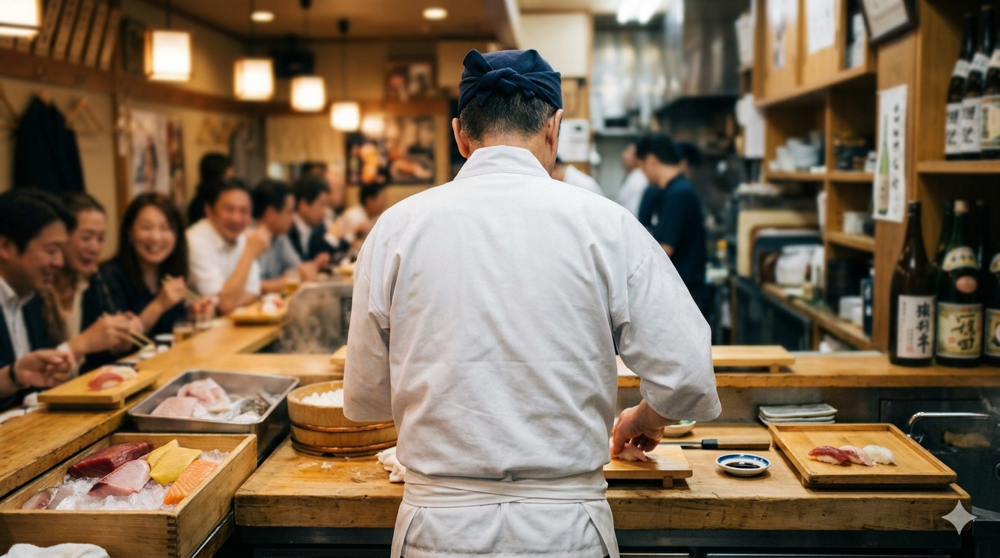
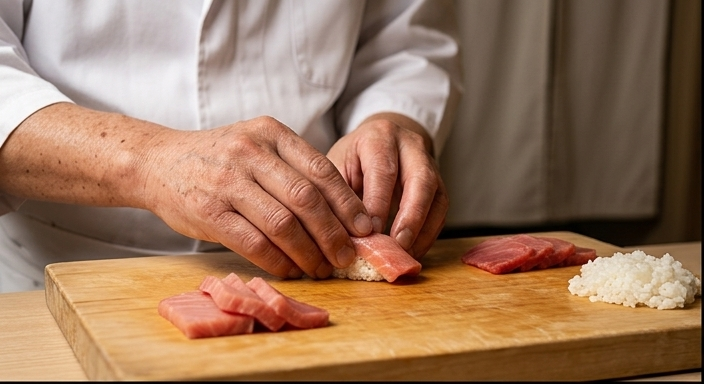
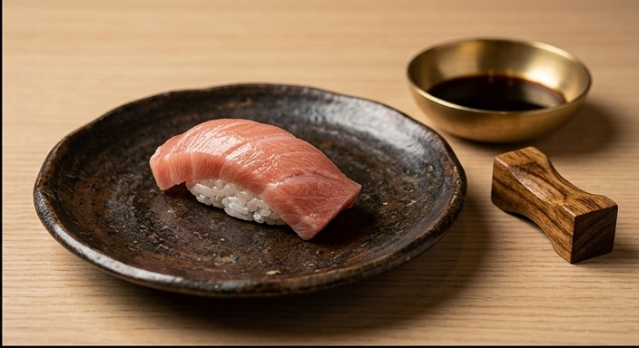
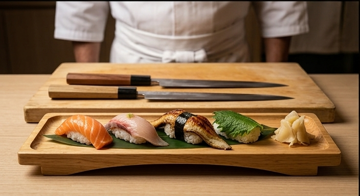
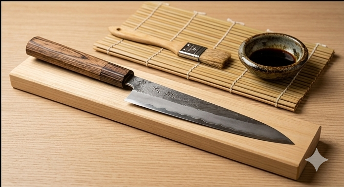

みなと握り
旬の握り八貫、巻物、椀物。初めての方にも楽しみやすい昼のコース。
3,800円Sushi Minato
港町の小さな鮨屋を想定した、架空店舗のWeb制作デモです。落ち着いた予約導線と、職人の手仕事が伝わる余白のある構成にしました。

このページは実在店舗ではなく、個人店の雰囲気を想定したデモサイトです。店名・住所・メニュー・価格はすべて架空です。




Philosophy
小さな店舗サイトでは、情報を詰め込みすぎず、来店前の期待感を丁寧に作ることが大切です。写真風のビジュアル、予約導線、営業時間、アクセスを一画面ずつ自然につなげています。
Information
Reservation
少人数の店舗を想定し、電話予約とWeb問い合わせのどちらにもつながる構成にしています。